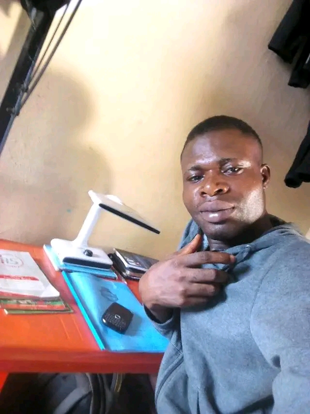

About us
On the introductory page of the sections, it can be useful to repeat the navigationand provide more context, such as:
- Mission:learn more about our corperate mission and philanthropic efforst
- History:Read about our corperat history and learn how we grow to become the largest wedget maker in the country
- Executive Team:Our Team of Executive makes the Company run like a well oiled machine also useful for making wedgets.
- Contact us: Here you can find multiple method for contantingus and we reall do care what you have to sayy
About okeysons
A career is one of the most crucial facets of one’s existential spheres. Career aspiration refers to a decision made by a student on his/her future work, occupation, career, or profession. It is what an individual wants or prefers to do in terms of work. It encompasses a set of life chores that an individual is deemed to conduct ranging from educational to career endeavors (Nancy & Teru, 2017). Career aspiration especially among diverse options is usually a heroic task and is very important to the life of junior secondary school students (Osipow, 2013). This therefore underscores the need to guide adolescents in planning for careers and making mature decisions. The school system has the responsibility of assisting the youths in making competent career decisions that are appropriate to their abilities, aptitudes, interests, and other personality characteristics (Animasahun, 2007) According to Osa-Edoh and Alutu (2011), one of the greatest problems of a student is decision making and choice of career. Career aspiration is for young or older adults to either start a new career or enter a new career that they have never done. It is so important that proper sensitization is carried out for our youth who are changing career tracks to go to the career they aspire for more improved career development.
According to Kerka (2010), career choice is influenced by multiple factors which include personality, interest, self-concept, cultural identity, globalization, socialization, role models, social support and available resources such as information and finances. Hewitt (2010), suggested that most people are influenced by a career that their parents favor. Others follow the career that their educational choice has opened for them, and some choose to follow their passion regardless of how much or little it will make them. Still, there are those who choose the career that gives high income. However, research shows that the choice of career among secondary school students is determined by a combination of personal abilities, personality type and other factors (Okafor, 2012). For example, some studies have found that the family plays a critical role in the career aspirations of secondary school students (Owoyele & Muraina, 2015; Otto, 2015). There are varying opinions and findings, however, as to which specific family characteristics influence career aspirations. For instance, conflicting data exist regarding the influence of socioeconomic variables. Findings by Mau and Bikos (2020) suggests that both parents’ education and income influences career aspirations, while other studies carried out by Hossler and Stage (2018) and Muraina (2018) show that only parents’ education has influence on career aspiration. Other family variables that have been shown to influence career aspiration include parents’ occupation (Trice, 2014) and family size (Muraina, 2018). The father’s occupational status is highly correlated with his son’s occupation (Blau, 2014).
In his study, Spade (2015) also found that gender difference also influences the career path and experience of the learners which starts at pre-school and continues throughout their educational careers. Teachers like parents are viewed as key players in the career paths that young people eventually pursue especially girls (Barnett, 2017). In her study in Nigeria, Denga (2014) found that sex-role stereotypes exist among children in primary schools. Anderson (2004) Tradition religious and culture/Ethnic background perception of being suitable for a particular job also has been found to influence career of students. This implies that the beliefs of significant influence other children’s self-perceptions of ability and consequently career choice, in terms of the task they are given, the activities they engage in, the resources they can access and manage, and the opportunity they have to make decisions. Generally speaking, Gender is linked to uneven access to resources, power and choices (Alimi Ehinola & Alabi 2012) Realities in history, society, religious, economy and culture has an impact on how men and women are positioned. Findings show that only a few teachers encourage students to take certain subject options that are congruent with the aptitudes, characteristics and abilities that they identify (Falaye and Adams, 2018). Onayase and Onayase (2009) on the other hand, revealed that environmental factor also plays a major role in choosing a career path among secondary school students.
According to Salvy, Haye Bowker, and Hermans (2012), peers are great sources of motivation for one another. Lifelong friendships are formed at school and peers have been known to stand up for one another sometimes even more than siblings. They assist one another with school work and also become mentors to one another in their personal lives. According to Salvy et al, (2012), very often, one find that some students pursue some courses just because their friends are doing same. As a result such students sometimes find it difficult to perform well because they do not have an interest in the course. However, some adolescents choose friends who have characteristics or talents they admire, which motivates them to achieve and act as their friends do. Interestingly, some peer groups encourage members to study hard in school and can also help them think more creatively. (Brown & Barbosa, 2009).
From the foregoing finding, it is worthy to note the essence of career aspirations amongst students as well as what the students want to do in their lifetime. No matter one's age, the choice of career or desire is an important question for everybody. A lot of students in secondary schools believe that their future is a glorious adventure in which they are bound to succeed (salami & Salami, 2013). Many of them have the idea that they will be able to work in public or private establishments as soon as they complete their secondary education. Students in secondary schools like many other young adults are always worried about what they will do with their lives and the kind of adult they will become. They are concerned about early entry into the occupational world and finding productive and rewarding places in and out of rapidly, fast-changing societies where employment is unlikely to be available on a scale sufficient to absorb more than a small fraction of the young people when they do arrive at the labour market. How the young people of today meet the problem for tomorrow will depend upon the amount of success they make in planning for that tomorrow (Wattles, 2009), hence the need for this study.
1.9Scope of the study
The study examined the possibility of conducting a comparable investigation in different location or on a large scale. The variables for the study include gender influence, family background influence, locality influence and peer pressure influence. The study is limited to public secondary schools in Calabar South Local Government Area of Cross River State, Nigeria.
1.11 Definition of terms
To prevent one from difficulty in comprehending the content of this research, it is pertinent to clearly define some important terms as used in this work.
Career: This is used in the current study to refer to the broad opportunities that exist for lifelong vocations. It is a profession for which one is trained and which is undertaken as a permanent calling. Examples of careers are teaching, medicine, journalism and others. Career aspiration: Career aspiration is used in this study to refer to the path that students want their careers to follow. It reflects the aims that students have concerning their future careers.
Family background: This refers to all the conditions and circumstances in the family which relate with the child physically, intellectually and emotionally.
Gender: This refers to the characteristics of women and men (girls and boys)
1.10 Limitations of the study
The researchers encountered some difficulties in the respondents, negative attitude towards the questionnaire. However, the validity of the findings were not hampered.
Continue Reading